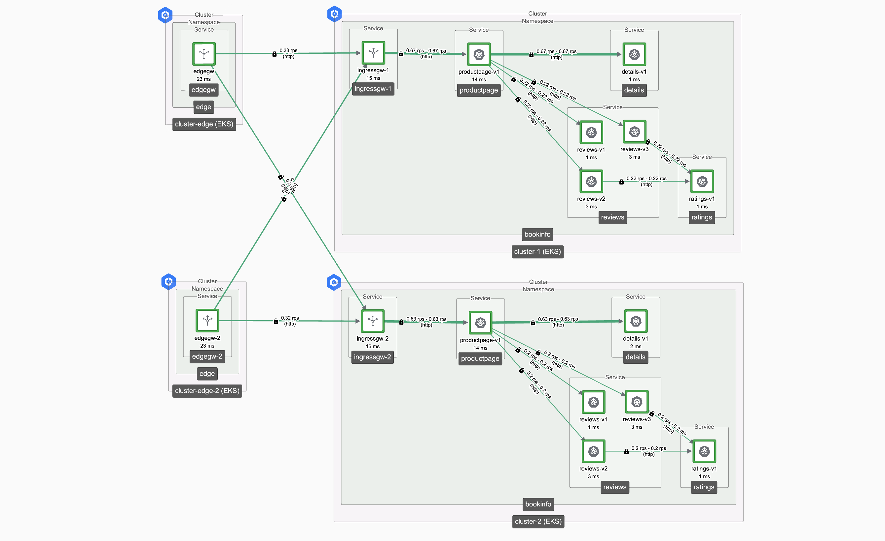

扩展演示环境
添加第二个 Edge Gateway 以提供 Edge 高可用性。
我们将扩展在演示环境说明中描述的演示环境。我们将在第二个区域中添加一个额外的 Edge 集群，并部署一个 Edge Gateway：
- 在 region-2 上登记一个额外的 Edge 集群
- 扩展 Tetrate 配置以涵盖 edge-ws，并创建第二个 edge-gwgroup-2 组
- 创建一个 edge 命名空间并在该命名空间中部署一个 Edge Gateway
- 部署一个为该 Edge Gateway 暴露服务的 Gateway 资源

开始之前
在配置中有许多组件，因此在继续之前，标识并命名每个组件将非常有帮助：
| cluster-1 | cluster-2 | cluster-edge | cluster-edge-2 | |
|---|---|---|---|---|
| AWS 区域： | eu-west-1 | eu-west-2 | eu-west-1 | eu-west-2 |
| 命名空间： | bookinfo | bookinfo | edge | edge |
| 工作空间： | bookinfo-ws | bookinfo-ws | edge-ws | edge-ws |
| 网络： | app-network | app-network | edge-network | edge-network |
| 网关组： | bookinfo-gwgroup-1 | bookinfo-gwgroup-2 | edge-gwgroup | edge-gwgroup-2 |
| 入口网关： | ingressgw-1 | ingressgw-2 | edgegw | edgegw-2 |
| 网关资源： | bookinfo-ingress-1 | bookinfo-ingress-2 | bookinfo-edge | bookinfo-edge-2 |
| Kubectl 上下文别名： | k1 |
k2 |
k3 |
k4 |
先决条件
这些说明从创建演示环境中描述的部署中继续。
扩展演示环境
添加第二个 Edge Gateway
我们将执行以下步骤：
- 登记一个额外的 Edge 集群
- 扩展 Tetrate 配置（工作空间、新的网关组、集群设置）
- 配置集群以添加 edge 命名空间和 Tier1Gateway
- 部署 Gateway 资源以公开服务
操作步骤...
登记额外的 Edge 集群
按照 Tetrate Service Express 或 Tetrate Service Bridge 的说明，登记新的 cluster-edge-2 集群。确保安装任何所需的依赖项，例如 AWS 负载均衡控制器或 Tetrate Route 53 控制器。
扩展 Tetrate 配置
我们将执行以下操作：
- 扩展 edge-ws 工作空间，以包括新的集群和命名空间（稍后创建）
- 添加一个新的 网关组 用于新的集群
- 编辑集群设置，设置 tier1Cluster 和 network 值
cat <<EOF > edge-ws.yaml
apiversion: api.tsb.tetrate.io/v2
kind: Workspace
metadata:
organization: tse
tenant: tse
name: edge-ws
spec:
namespaceSelector:
names:
- "cluster-edge/edge"
- "cluster-edge-2/edge"
EOF
tctl apply -f edge-ws.yaml
cat <<EOF > edge-gwgroup-2.yaml
apiVersion: gateway.tsb.tetrate.io/v2
kind: Group
metadata:
tenant: tse
organization: tse
workspace: edge-ws
name: edge-gwgroup-2
spec:
namespaceSelector:
names:
- 'cluster-edge-2/edge'
EOF
tctl apply -f edge-gwgroup-2.yaml
使用界面编辑 edge-cluster-2 集群，将 “Is Tier 1?” 设置为 true 并分配 Edge-Network 网络。
配置集群
创建 edge 命名空间并部署 Edge Gateway。记得设置 kubectl 上下文或使用上下文别名来指向 cluster-edge-2。
kubectl create namespace edge
kubectl label namespace edge istio-injection=enabled
cat <<EOF > edgegw-2.yaml
apiVersion: install.tetrate.io/v1alpha1
kind: Tier1Gateway
metadata:
name: edgegw-2
namespace: edge
spec:
kubeSpec:
service:
type: LoadBalancer
EOF
kubectl apply -f edgegw-2.yaml
部署 Gateway 资源
cat <<EOF > bookinfo-edge-2.yaml
apiVersion: gateway.tsb.tetrate.io/v2
kind: Gateway
metadata:
organization: tse
tenant: tse
workspace: edge-ws
group: edge-gwgroup-2
name: bookinfo-edge-2
spec:
workloadSelector:
namespace: edge
labels:
app: edgegw-2
http:
- name: bookinfo
port: 80
hostname: bookinfo.tse.tetratelabs.io
routing:
rules:
- route:
clusterDestination: {}
EOF
tctl apply -f bookinfo-edge-2.yaml
一旦配置完成，你的集群摘要应如下所示：

验证服务是否正常运行
无需 DNS
我们在这些测试中不会使用 DNS，因为我们希望精确控制请求我们服务（bookinfo.tse.tetratelabs.io）将路由到哪个 Edge Gateway。
请务必设置正确的 Kubernetes 上下文，获取每个 Edge Gateway 的地址：
export GATEWAY_IP_1=$(kubectl -n edge get service edgegw -o jsonpath="{.status.loadBalancer.ingress[0]['hostname','ip']}")
echo $GATEWAY_IP_1
export GATEWAY_IP_2=$(kubectl -n edge get service edgegw-2 -o jsonpath="{.status.loadBalancer.ingress[0]['hostname','ip']}")
echo $GATEWAY_IP_2
验证你是否可以通过每个 Edge Gateway 访问 productpage.bookinfo 服务：
curl -s --connect-to bookinfo.tse.tetratelabs.io:80:$GATEWAY_IP_1 "http://bookinfo.tse.tetratelabs.io/productpage"
curl -s --connect-to bookinfo.tse.tetratelabs.io:80:$GATEWAY_IP_2 "http://bookinfo.tse.tetratelabs.io/productpage"
下一步
你现在可以尝试Edge 集群故障转移行为。